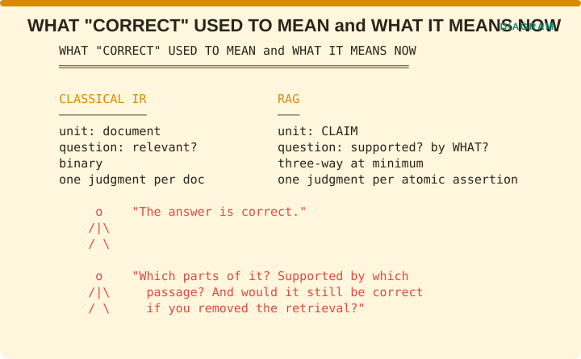
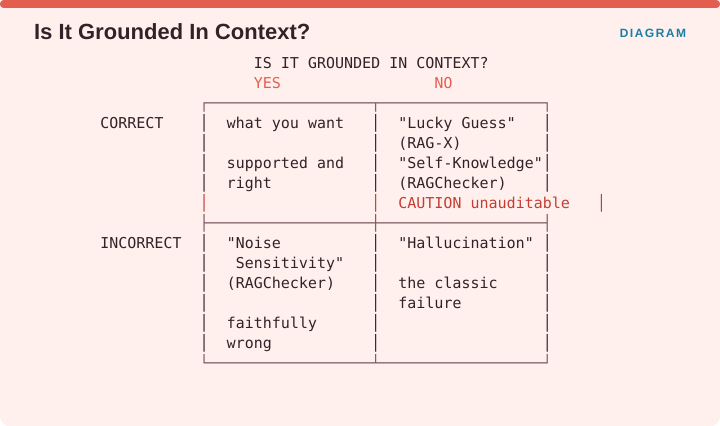

Measuring Retrieval › Correctness and Grounding
Part
Claims, context, citations, refusal, sufficiency, and metric confounding
Chapter 4 in Volume I treated correctness as a property of a retrieved set, asking whether a document was relevant, yes or no. RAG breaks that framing in two ways.

The figure sets the two side by side. In classical retrieval the unit was the document, the question was whether it was relevant, the answer was binary, and there was one judgment per document. In RAG the unit is the claim, the question is whether it is supported and by what, the answer has at least three possible values, and there is one judgment per atomic assertion.
The first shift is that the unit dropped to the claim. A paragraph-long answer contains a dozen separate assertions, some supported by the retrieved context, some drawn from the model’s own weights, and some simply wrong. A single score for the whole response averages those together into something that means nothing.
The second shift is that correctness separated from groundedness. Those are now two independent axes, and the central insight of this part is that a system can be high on one and low on the other in either direction.
So a claim that an answer is correct now invites three follow-up questions: which parts of it, supported by which passage, and would it still be correct if you removed the retrieval entirely?

Crossing correctness against groundedness gives four boxes. Correct and grounded is what you want, meaning supported and right. Correct and ungrounded is what RAG-X calls a Lucky Guess and RAGChecker calls Self-Knowledge, and it is unauditable because there is no source to check. Incorrect and grounded is what RAGChecker calls Noise Sensitivity, meaning the system was faithfully wrong because the retrieved material misled it. Incorrect and ungrounded is hallucination in the classic sense.
Three of those four boxes are failures, and only one of them is what people mean when they say hallucination. The correct-and-ungrounded box is the one that survives every review process, because the answer is right and nobody checks where it came from.
Note the convergence in the naming. RAG-X arrived at Lucky Guess and RAGChecker arrived at Self-Knowledge, independently, for the same box.
Measuring Retrieval · Madhava Gaikwad · First edition, September 2026